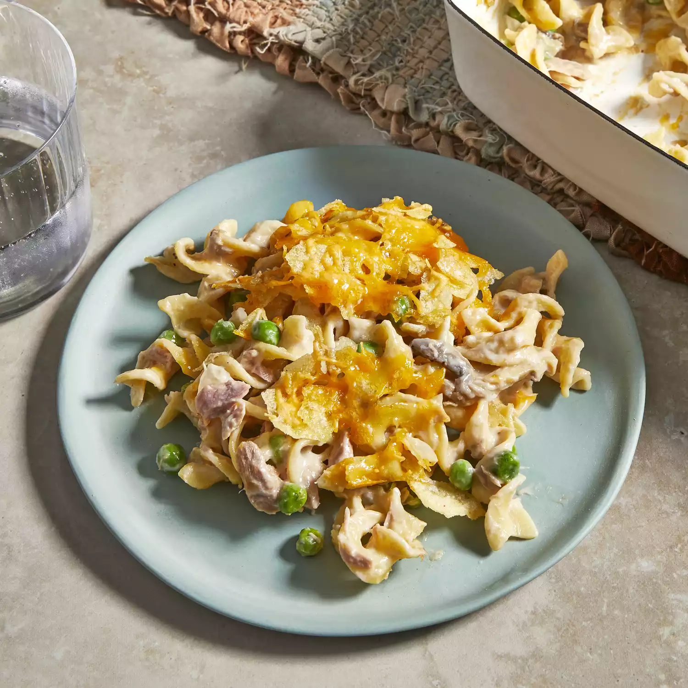

TUNA CASSEROLE

Description
This is a tuna casserole that even my picky family loves! The potato chips give the casserole a crunchy crust.
Ingredients
- 1 (12 ounce) package egg noodles
- 2 (5 ounce) cans tuna, drained
- 1 cup frozen green peas
- 1 cup crushed potato chips
Steps
- Fill a large pot with lightly salted water and bring to a rapid boil. Cook egg noodles at a boil until tender yet firm to the bite, 7 to 9 minutes; drain.
- Meanwhile, preheat the oven to 425 degrees F (220 degrees C).
- Mix noodles, condensed soup, 1 cup cheese, tuna, peas, mushrooms, and onion in a large bowl until well combined. Transfer into a 9x13-inch baking dish; top with crushed potato chip and remaining 1 cup of cheese.
- Bake in the preheated oven until cheese is bubbly, about 15 to 20 minutes.
Return to main page